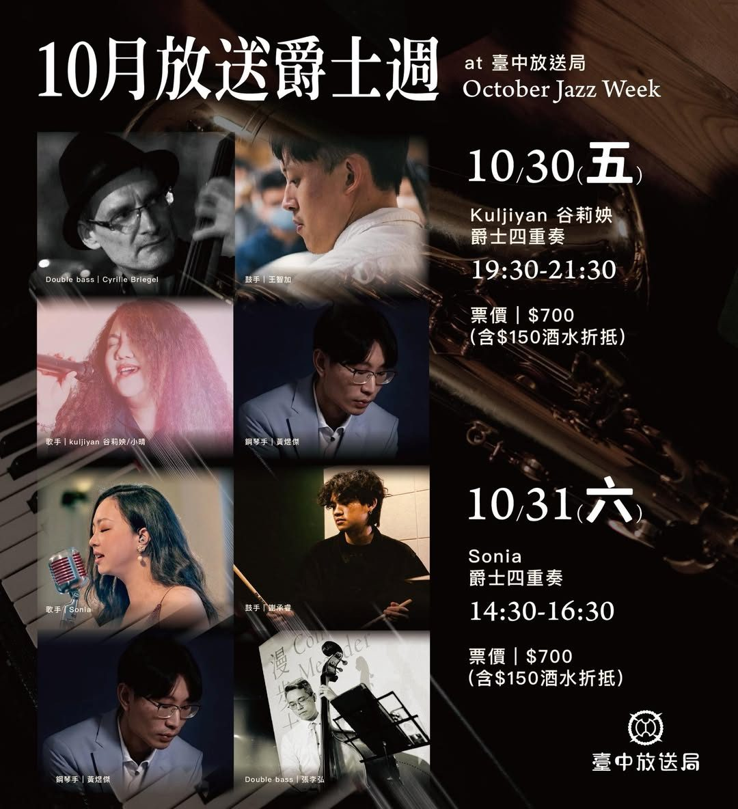

10.30 五 – 10.31 六 · 爵士音樂會
10月｜放送爵士週
十月的尾聲，我們把爵士樂帶進了台中最有歷史溫度的台中放送局。兩天、不同的演出陣容，邀請你用音樂，慢慢品味美好的秋天。
- 10/30（五）19:30–21:30Kuljiyan 谷莉姎爵士四重奏
- 10/31（六）14:30–16:30Sonia 爵士四重奏
- 票價
- $700（含 $150 酒水折抵）
- 地點
- 歷史建築 台中放送局（台中市北區電台街一號）
- 演出設計
- MileSpace．Live Jazz 邁爾斯爵士空間
10/31 園區當天設有 Radio Market 電台市籌辦的音樂市集活動，歡迎自由漫步入場！
場次資訊與購票 ↗